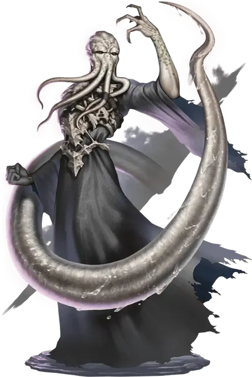

Ясновидящий свежеватель разума
Mind Flayer Clairvoyant
Средняя Аберрация, законно-злая

Класс Доспеха 15 (кираса)
Хиты 156 (24к8 + 48)
Скорость 30 футов, летая 60 футов (парит)
| мод | спас | ||
|---|---|---|---|
| СИЛ | 11 | +0 | +0 |
| ЛОВ | 12 | +1 | +1 |
| ТЕЛ | 15 | +2 | +2 |
| мод | спас | ||
|---|---|---|---|
| ИНТ | 21 | +5 | +9 |
| МДР | 17 | +3 | +7 |
| ХАР | 18 | +4 | +8 |
Навыки Восприятие +7, Магия +9, Проницательность +7, Скрытность +5
Сопротивление урону психическая энергия
Иммунитет к состояниям испуг, ослепление, очарование
Чувства истинное зрение 15 футов, тёмное зрение 120 футов, пассивное Восприятие 17
Языки Глубинная речь, Подземный, Телепатия 120 фт.
Опасность 11 (7200 опыта)
Бонус мастерства +4
Особенности
Легендарное сопротивление (3/день). Если свежеватель проваливает спасбросок, он может вместо этого сделать спасбросок успешным.
Сопротивление магии. Свежеватель совершает с преимуществом спасброски от заклинаний и прочих магических эффектов.
Действия
Мультиатака. Свежеватель разума совершает две атаки Щупальцами.
Щупальце. Рукопашная атака оружием: +9 к попаданию, досягаемость 5 футов, одно существо. Попадание: 21 (3к10 + 5) урона психической энергией. Если цель Среднего размера или меньше, она будет схвачена (Сл высвобождения 17) и должна преуспеть в спасброске Интеллекта Сл 17 или станет недееспособно до тех пор, пока это состояние не окончится.
Извлечь мозг. Рукопашная атака оружием: +9 к попаданию, досягаемость 5 футов, один недееспособный Гуманоид схваченный свежевателем разума. Попадание: 55 (10к10) колющего урона. Если этот урон снижает хиты цели до 0, свежеватель разума убивает её, извлекая и пожирая её мозг.
Использование заклинаний (псионика). Базовой характеристикой свежевателя является Интеллект (Сл спасброска от заклинания 17). Свежеватель может накладывать следующие заклинания, не нуждаясь в компонентах:
• Неограничено: обнаружение магии [detect magic], обнаружение мыслей [detect thoughts], волшебная рука [mage hand] (рука невидима)
• 3/день каждое: подсматривание [clairvoyance] (действием), рассеивание магии [dispel magic]
• 1/день каждое: уход в иной мир [plane shift] (только на себя)
Высвободить пустоту (перезарядка 5–6). Свежеватель разума открывает разлом в Дальнем пределе, сосредоточенный в точке, которую свежеватель разума может видеть в пределах 60 футов от себя, и щупальце хлещет по существам возле разлома. Каждое существо, кроме свежевателей разума, в пределах 30 футов от разлома должно совершить спасбросок Интеллекта Сл 17, после чего щупальце исчезает, а разлом закрывается. В случае провала существо получает 18 (4к8) урона холодом от разлома плюс 18 (4к8) урона психической энергией от щупальца и находится в состоянии ошеломления на 1 минуту. В случае успеха существо получает только половину урона. Ошеломлённое существо может повторять спасбросок в конце каждого своего хода, прекращая эффект на себе при успехе.
Реакции
Искажение реальности. При попадании броском атаки свежеватель разума получает бонус +4 к КД против этого броска атаки, что потенциально может привести к промаху. Затем свежеватель разума, вместе со всем снаряжением, которое он носит или несёт, магическим образом телепортируется на расстояние до 60 футов в незанятое пространство, которое он может видеть.
Описание
Свежеватели разума, также известные как иллитиды, лакомятся мозгами Гуманоидов по всей Мультивселенной. Их отличает пурпурная кожа и головы, похожие на осьминогов, из которых торчат извивающиеся щупальца.
Стремясь восстановить утраченную империю, несколько свежевателей разума обратились за ответами на свой родной план, Дальний предел. Ясновидящий свежеватель разума заглянул в беззвездные глубины этого царства и впоследствии был вознагражден необычайными способностями.
Вместо того, чтобы прислушиваться к старшему мозгу [elder brain], ясновидящий свежеватель разума слушает шепот и прихоти голосов Дальнего предела. Помимо поедания мозгов, ясновидящий свежеватель разума может вызывать щупальца, которые разрывают ткань реальности и искажают разум врагов.